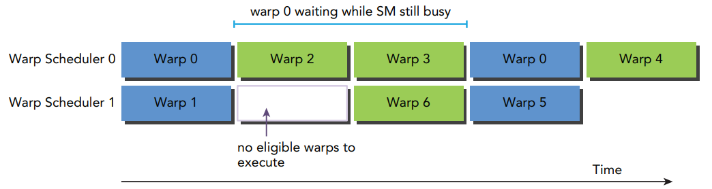
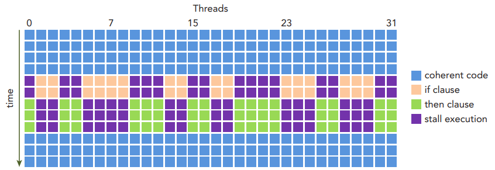
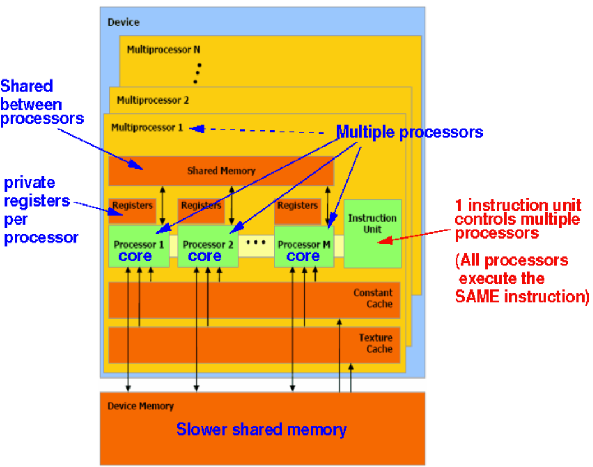
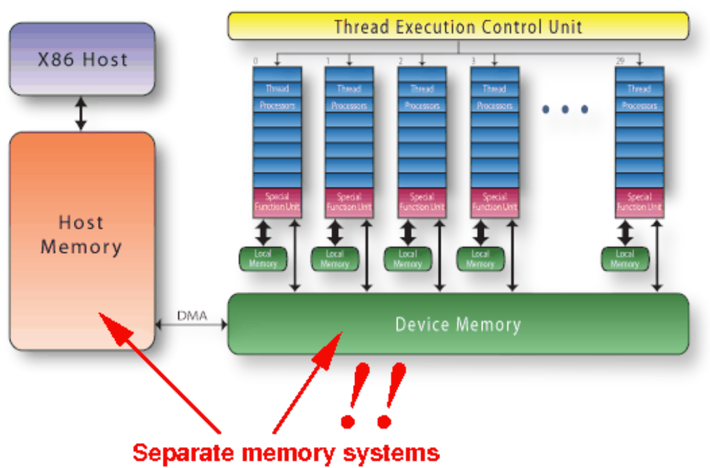

GPU 原理速成
GPU 就是核心多一点的 CPU.
GPU 是典型的 SIMD Computer (a.k.a. Vector Computer).
GPU 中不同的 ALU 执行的是同样的指令 (不同数据)
硬件设计哲学
虽然一整个 GPU 很复杂, 但从 RTL 来看, 实现任何一个特定的功能 (比如读个寄存器, 做某种 ALU 运算) 都需要以下三种类型的信号! 部分名词是我自己取的.
读懂一个模块首要的任务就是先弄清它有几个相对独立的功能 (比如 Figure fig-registers 有两个功能: 读寄存器和写寄存器), 然后针对每个功能去找这三种信号:

- Common 信号: 几乎每个 sync 模块都有的信号组. 比如
clk,reset,enable.- 要
clk是因为大部分动作都是时钟同步的. - 有些操作比如写寄存器有一个清零 (
reset) 的操作会很方便. enable有两种: 全局的和某功能专属的.- 全局的
enable是指整个模块在某些周期不工作 (省电). 一般会跟reset一起用, 只有reset=0且enable=1时模块才执行主逻辑. - 局部的
enable一般情况是多余的, 但是经常配合下文的选择信号使用.
- 全局的
- 要
- Selection 选择信号: 它们不承载关键数据, 只是用来选择使用哪个输入的信号. 一般有类似有「编码」思想的信号都是 selection 信号, 比如
opcode,funct3, etc.选择信号会有层级之分, 高层级的 (
state) 一般用if, 低层级的 (sel) 一般会用 macro 宏 + case 来选择, 比如下面这个典型的选择结构:localparam ARITHMETIC = 2'b00, MEMORY = 2'b01, CONSTANT = 2'b10; always @(posedge clk) begin if reset begin rs <= 0; ... end else if (enable) begin if (state == 2'b01) begin case (sel) ARITHMETIC: begin ... end MEMORY: begin ... end CONSTANT: begin ... end endcase end end end ...选择启动一个功能 (比如选择信号为
3b'011) 有时会再加入一个这个功能的专属enable, 以防止误操作 (比如下面 Tiny-GPUregisters中的写操作).1 bit 的选择信号一般也叫做 flag (比如
mem_read_valid).
- Minority Valid 数据信号: 其实就是一般意义下的承载数据的信号, 比如
next_pc,imm, etc. 但是我这样起名字是因为我想强调虽然一个模块的输入多得吓人, 其实大部分都是数据信号, 但在一个时钟周期里, 其实只有很少部分的信号是有效参加计算的, 大部分的信号都被 selection 信号屏蔽调了!
Tiny-GPU
本章用 tiny-gpu 为例入门 GPU 架构.
架构的 First Principles 和 Actual Implementation 是两个极端, 前者引入了设计哲学, 后者可加深理解而且不唯一 (而且较为随意说实话), 下面是 Tiny-GPU 的设计哲学:


线程 thread
寄存器
registers- 作为一个储存器:
- 地址宽度: 4 bit (16 个寄存器)
- 数据宽度: 8 bit (每个寄存器 8 位)
- 2R1W:
- 能且只能同时读两个寄存器的值
- 只能写一个寄存器的值.
Name I/O Width Description clkIn 1b 该模块所有动作必须在时钟上升沿才被执行. resetIn 1b 清零 R0-R13, 载入R14=%blockDim,R15=%threadIdx.enableIn 1b 当 reset=0且enable=1时模块执行主逻辑.registersHide Reg 16 × 8b 16 个 8 位寄存器, 前 13 个是通用寄存器, 后三个是特殊的只读寄存器, 分别存放: blockIdx,blockDim,threadIdx.block_idIn 8b 主逻辑下载入 R13=%blockIdx.core_stateIn 3b 主逻辑下选择是读 ( 011) 还是写 (110) 寄存器.decoded_rd_addressIn 4b 主逻辑下写寄存器时指定要写的寄存器地址. decoded_rs_addressIn 4b 主逻辑下读寄存器时指定要读的第一个寄存器地址. decoded_rt_addressIn 4b 主逻辑下读寄存器时指定要读的第二个寄存器地址. decoded_reg_write_enableIn 1b 主逻辑下额外的写使能. decoded_reg_input_muxIn 2b 主逻辑下选择写寄存器时的数据来源 ( decoded_immediate,alu_out,lsu_out三选一)decoded_immediateIn 8b 可能要存的数据. alu_outIn 8b 可能要存的数据. lsu_outIn 8b 可能要存的数据. rsOut 8b 读出的第一个寄存器的值. rtOut 8b 读出的第二个寄存器的值. - 作为一个储存器:
运算单元
alu- 支持的运算 macro:
ADD,SUB,MUL,DIV.
Name I/O Width Description clkIn 1b - resetIn 1b 清零输出寄存器 alu_out.enableIn 1b 当 reset=0且enable=1时模块执行主逻辑.core_stateIn 3b 主逻辑下为 101时才可能开始运算.decoded_alu_output_muxIn 1b 主逻辑下为 1时输出 NZP 结果00000NZP, 为0时输出运算结果.decoded_alu_arithmetic_muxIn 2b 主逻辑且 decoded_alu_output_mux=0时选择输出哪种运算结果,ADD(00),SUB(01),MUL(10),DIV(11).rsIn 8b 第一个操作数. rtIn 8b 第二个操作数. alu_outOut 8b 运算结果或 NZP 结果. - 支持的运算 macro:
程序计数器
pcName I/O Width Description clkIn 1b - nzpHide Reg 3b NZP 标志寄存器. resetIn 1b 清零 next_pc和nzp.enableIn 1b 当 reset=0且enable=1时模块执行主逻辑.core_stateIn 3b 主逻辑下选择更新 next_pc(101) 还是nzp(110).decoded_pc_muxIn 1b 主逻辑且 core_state=101时若为1则比较decoded_nzp和nzp, 若一样则说明是跳转, 加载decoded_immediate到输出; 否则就正常加载current_pc + 1.core_state=110时且decoded_nzp_write_enable=1时加载alu_out的低三位到nzp.decoded_nzpIn 3b 输入的 NZP 标志位, 用来和当前 NZP 标志寄存器比较. alu_outIn 8b 不是用来比较, 而是用来更新 NZP 标志寄存器的值. current_pcIn 8b 当前 PC 值. decoded_immediateIn 8b 可能要跳转的目标地址. next_pcOut 8b 下一个 PC 值. Load-Store Unit
lsuName I/O Width Description clkIn 1b - resetIn 1b 清零所有输出寄存器. enableIn 1b 当 reset=0且enable=1时模块执行主逻辑.decoded_mem_read_enableIn 1b decoder的输出, 为1说明是LDR指令.decoded_mem_write_enableIn 1b decoder的输出, 为1说明是STR指令.lsu_stateOut 2b FSM 的状态, IDLE(00),REQUESTING(01),WAITING(10),DONE(11).core_stateIn 1b 在 LDR和STR指令下触发00->01(core_state=011) 和11->00(core_state=110) 的状态转移.rsIn 8b LDR指令下01->10状态转移时写入mem_read_address;STR指令下01->10状态转移时写入mem_write_address.rtIn 8b STR指令下01->10状态转移时写入mem_write_data.… … … …
lsu FSM 演示
LDR 指令的 FSM.
STR 指令的 FSM.
Nvidia GPU
介绍一些 Nvidia GPU 的基本概念.
Hardware Concepts
不同的架构在硬件上是有区别的.
- CUDA Core/SP (Stream Processor)
- 每个 CUDA Core 都有自己的 PC.
- 一个 CUDA Core 上面只能计算单精度/整数
- SM (Streaming Multiprocessor): 包括很多 CUDA Cores, SFU (Special Function Unit, 比如计算
__cos()), LD/ST 单元, Scheduler, etc.- Pascal 架构中一个 SM 有 128 个 CUDA 核心.
- 一个 SM 里面只有一个大的 Reg File/shared memory/L1 cache, 而不是每个 CUDA Core 都有.
- GPC (Graphics Processing Cluster): 包括多个 SM.
Software Concepts
Thread: 一个 thread 在同一时间只能在一个 CUDA Core 上运行, 但一个 CUDA Core 可以被 Warp Scheduler 分时间片给多个 threads 运行.
Warp: Warp Scheduler 硬件模块会每次调度 32 个 threads, 是调度的最小单位.
- Active Warp: 当有足够的资源给一个 block 去运行的时候, 它立即成为 active block, 里面的所有 warp 都称为 active warp, 它可以分为:
- Selected Warp: Warp Scheduler 硬件模块每个 cycle 会挑选 active warp 并分配 32 个 CUDA Core 中去执行, 选中的 warp 称为 selected warp.
Stalled Warp: 如果一个 selected warp 在执行过程中发现需要等待某些资源 (比如 memory load 的结果), Warp scheduler 会暂时丢弃它转而选择其它的 eligible warp 执行, 它就变成 stalled warp (挂起/阻塞), 暂时不能被选中.
Figure 7: Warp 0 被挂起 [3].
- Eligible Warp: 没被选中的 active warp 称为 eligible warp, 它随时可以被选中去执行.
- Selected Warp: Warp Scheduler 硬件模块每个 cycle 会挑选 active warp 并分配 32 个 CUDA Core 中去执行, 选中的 warp 称为 selected warp.
- Warp Divergence: 一个 Warp 里面的所有 CUDA Core 都执行同样的指令, 但路径可能不同 (如遇到
if分支), 这时有些分支需要等待 (Stall) 其它分支, 称为 Warp Divergence.- 不同 warp 之间不会有等待的情况.
Figure 8: 不参与 if分支的 thread 也不能提前执行else分支而要等待哪些执行if分支的 thread [3].
- Active Warp: 当有足够的资源给一个 block 去运行的时候, 它立即成为 active block, 里面的所有 warp 都称为 active warp, 它可以分为:
Block: 一组 threads.
- Block 内的 threads 一定会在同一个 SM 上运行 (为什么?). 一个 SM 可以同时运行很多个 blocks.
Grid: 一组 blocks. 一个 Kernel 函数启动是相当于启动一个 grid.
CUDA
2026 年之前 GPU 只能做特定的函数运算, 2026 年之后引入了 GPGPU (General Purpose GPU), 有一整套库函数来对 GPU 进行编程.
- CUDA: Compute Unified Device Architecture (NVIDIA, 闭源)
- OpenCL: Open Computing Language (Apple Inc., 开源)
GPU device memory 可以被所有 CUDA 核心共享:
Figure 9: NVidia GPU 架构 [1] 连接有 GPU 的 CPU 二者的 memory 是不共享的 [1], 二者之间的数据由 DMA 搬运.
Figure 10: Seperate memory systems [1] Kernel functions [1]:
__host__: 默认在 CPU (host) 上运行的函数.__global__: 在 GPU 上运行, 可被 CPU 调用的函数.__device__: 在 GPU 上运行, 只能被 GPU 调用的函数.
Unified Memory 统一内存
全局变量: 可以被 CPU 和 GPU 访问的变量, 不能用 local variable 的方式声明!
__managed__ int x;统一内存允许 CPU 和 GPU 共享同一块内存区域, 比如 Listing lst-managed 中的 CPU 和 GPU 都能访问和改变
x变量:
managed.cu
#include <stdio.h>
#include <cuda_runtime.h>
__global__ void my_kernel(int* x_ptr) {
*x_ptr = 1;
printf("GPU sees x = %d\n", *x_ptr);
}
int main() {
int x = 0;
int* x_ptr = &x;
cudaMallocManaged(&x_ptr, sizeof(int));
my_kernel<<<1,1>>>(x_ptr);
printf("CPU sees x = %d\n", x);
cudaFree(x_ptr);
return 0;
}输出:
CPU sees x = 0
GPU sees x = 1注意是 CPU 先打印 (因为没有用 cudaDeviceSynchronize())!
Synchronization 同步
CPU 将指令发到 GPU 之后不会等 GPU 执行完再继续往下执行 (默认 async), 如果需要等 GPU 执行完再继续, 将 my_kernel<<<1,1>>>(x_ptr); 改为:
my_kernel<<<1,1>>>(x_ptr);
cudaDeviceSynchronize(); // Wait for GPU to finish输出:
GPU sees x = 1
CPU sees x = 1